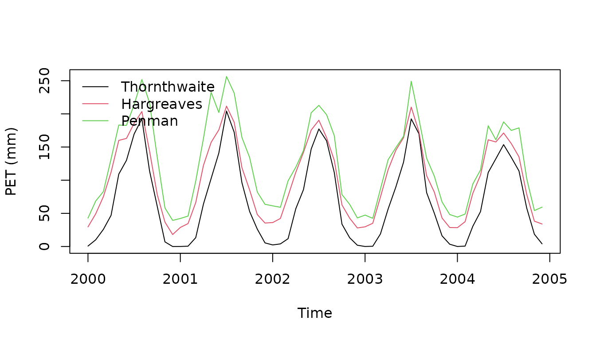
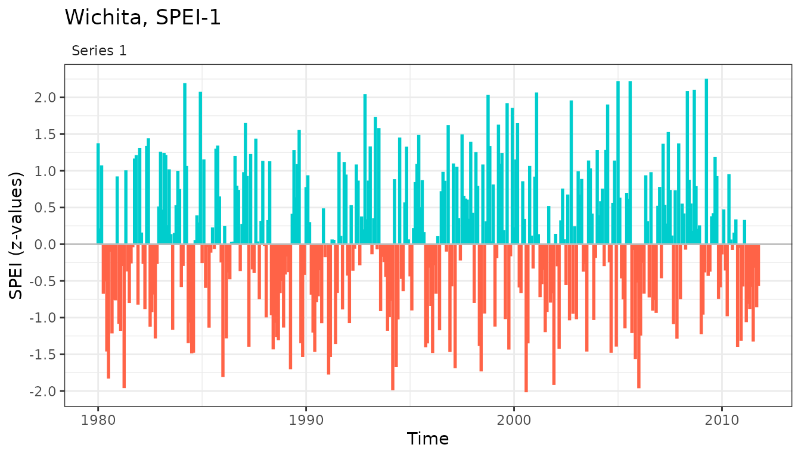
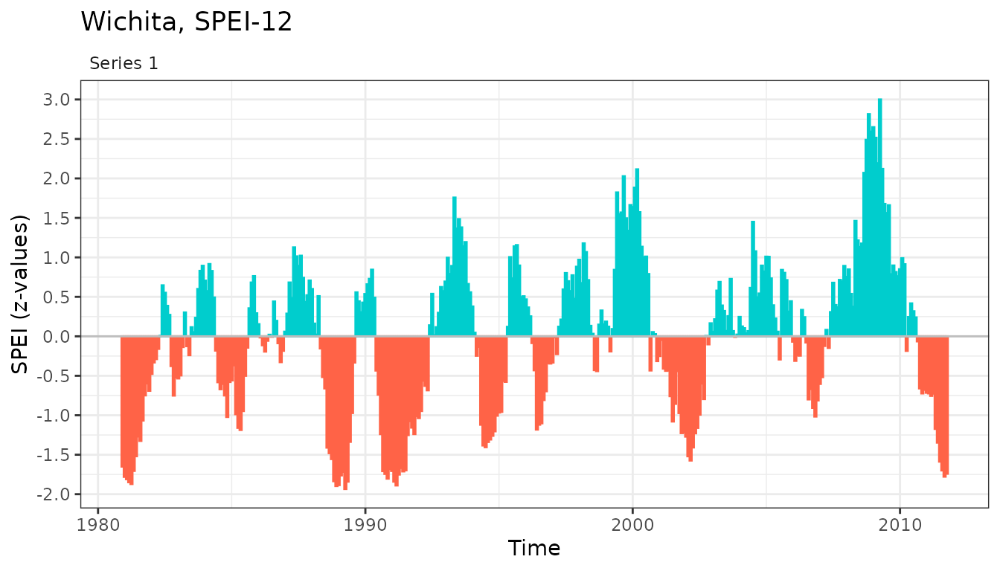
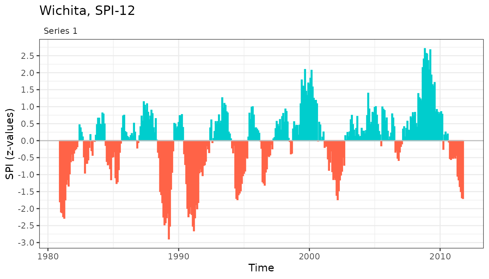

This vignette shows the basic workflow of the package with monthly data from a single weather station:
- compute the potential evapotranspiration (PET);
- compute the climatic water balance, precipitation minus PET;
- compute the Standardized Precipitation-Evapotranspiration Index (SPEI) and the Standardized Precipitation Index (SPI) at several time scales;
- plot the results and extract the values.
The data
The wichita dataset holds monthly climate records for
Wichita, Kansas (37.6475° N, 402.6 m above sea level) from January 1980
to October 2011.
data(wichita)
head(wichita)
#> YEAR MONTH PRCP TMAX TMIN TMED AWND TSUN ACSH
#> 1 1980 1 46.3 4.16 -4.91 -0.38 NA 3.96 76.45
#> 2 1980 2 20.7 3.04 -7.33 -2.14 NA 5.75 68.28
#> 3 1980 3 101.3 10.96 -0.45 5.26 NA 7.24 59.03
#> 4 1980 4 27.2 19.24 5.48 12.36 NA 9.28 55.67
#> 5 1980 5 67.5 23.58 11.33 17.46 NA 10.01 65.81
#> 6 1980 6 34.1 33.22 19.99 26.61 NA 11.81 45.33Precipitation (PRCP) is in mm, and temperatures
(TMAX, TMIN, TMED) in °C. The
other columns are the mean wind speed (AWND), sunshine
duration (TSUN) and cloud cover (ACSH), which
only the Penman method needs. See ?wichita for details.
The functions of the package work best with time series
(ts) objects, because the dates of the series are then
known. We convert the data to a monthly time series starting in January
1980:
Potential evapotranspiration
The SPEI is based on the climatic water balance, so we first need the PET. The package has three methods, which need different data:
| Function | Data needed |
|---|---|
thornthwaite() |
mean temperature and latitude |
hargreaves() |
maximum and minimum temperature and latitude (or extraterrestrial radiation); optionally precipitation |
penman() |
maximum and minimum temperature, latitude and elevation, plus wind speed and radiation or a proxy for it (sunshine hours, cloud cover) |
lat <- 37.6475
pet_tho <- thornthwaite(wichita[, "TMED"], lat)
#> Checking for missing values (`NA`): all the data must be complete. Input type is tsvector. Time series spanning Jan 1980 to Oct 2011.
pet_har <- hargreaves(wichita[, "TMIN"], wichita[, "TMAX"], lat = lat)
#> Calculating reference evapotranspiration using the Hargreaves method. Using latitude (`lat`) to estimate extraterrestrial radiation. Checking for missing values (`NA`): all the data must be complete. Input type is tsvector. Time series spanning Jan 1980 to Oct 2011.
pet_pen <- penman(wichita[, "TMIN"], wichita[, "TMAX"], wichita[, "AWND"],
tsun = wichita[, "TSUN"], lat = lat, z = 402.6, na.rm = TRUE
)
#> Using user-provided wind speed at 2 m height (`U2`) data. Using latitude (`lat`) to estimate extraterrestrial radiation. Using bright sunshine duration data (`tsun`) to estimate incoming solar radiation. Using minimum temperature (`Tmin`) to estimate dewpoint temperature and actual vapour pressure. Assuming constant atmospheric surface pressure corresponding to elevation `z`. Computing for a short crop. Missing values (`NA`) will not be considered in the calculation. Input type is tsvector. Time series spanning Jan 1980 to Oct 2011. Calculation method is ICID.penman() needs na.rm = TRUE here because
wind speed and sunshine duration have some missing months. The result is
in mm per month, and it is a time series with the same dates as the
input:
pet <- cbind(Thornthwaite = pet_tho, Hargreaves = pet_har, Penman = pet_pen)
plot(window(pet, start = c(2000, 1), end = c(2004, 12)),
plot.type = "single", col = 1:3, ylab = "PET (mm)"
)
legend("topleft", colnames(pet), col = 1:3, lty = 1, bty = "n")
The methods follow the same seasonal cycle but differ in magnitude. In Wichita, the mean annual PET is about 830 mm with Thornthwaite, 1,220 mm with Hargreaves and 1,490 mm with Penman. Thornthwaite’s method uses mean temperature only, and gives almost no PET in the cold months. Penman’s method is physically based and is the most accurate when the data are available; Hargreaves’ method is a common alternative when only temperature is available. The Penman series also has gaps where wind or sunshine data are missing. The choice of PET method affects the SPEI, so it is worth reporting.
Here we use the Hargreaves PET, which needs no missing-data handling:
bal <- wichita[, "PRCP"] - pet_harComputing the SPEI
spei() takes the water balance and the time scale, in
months. The time scale is the number of months over which the balance is
accumulated: SPEI-1 reflects the conditions of a single month, while
SPEI-12 reflects the conditions of the previous year.
spei1 <- spei(bal, 1)
#> Calculating the Standardized Precipitation Evapotranspiration Index (SPEI) at a time scale of 1. Using kernel type 'rectangular', with 0 shift. Fitting the data to a log-Logistic distribution. Using the ub-pwm parameter fitting method. Checking for missing values (`NA`): all the data must be complete. Using the whole time series as reference period. Input type is tsvector. Time series spanning Jan 1980 to Oct 2011, with frequency = 12.
spei3 <- spei(bal, 3)
#> Calculating the Standardized Precipitation Evapotranspiration Index (SPEI) at a time scale of 3. Using kernel type 'rectangular', with 0 shift. Fitting the data to a log-Logistic distribution. Using the ub-pwm parameter fitting method. Checking for missing values (`NA`): all the data must be complete. Using the whole time series as reference period. Input type is tsvector. Time series spanning Jan 1980 to Oct 2011, with frequency = 12.
spei12 <- spei(bal, 12)
#> Calculating the Standardized Precipitation Evapotranspiration Index (SPEI) at a time scale of 12. Using kernel type 'rectangular', with 0 shift. Fitting the data to a log-Logistic distribution. Using the ub-pwm parameter fitting method. Checking for missing values (`NA`): all the data must be complete. Using the whole time series as reference period. Input type is tsvector. Time series spanning Jan 1980 to Oct 2011, with frequency = 12.For each calendar month, the function fits a log-Logistic
distribution to the accumulated balances and converts each value to the
standard normal scale. The result is an object of class
spei:
spei12
#> Jan Feb Mar Apr May
#> 1980 NA NA NA NA NA
#> 1981 -1.779965436 -1.809501692 -1.847792958 -1.870803239 -1.704665344
#> 1982 -0.476188302 -0.331000468 -0.288442382 -0.158908197 0.005017838
#> 1983 -0.533645068 -0.494990257 -0.135700134 0.301848003 -0.124603136
#> 1984 0.705050388 0.571837951 0.914928518 0.826957786 0.491038967
#> 1985 -0.558557392 -0.367051686 -0.986359915 -1.159125773 -1.186044404
#> 1986 0.153246904 -0.013656902 -0.112813125 -0.193385398 -0.056017344
#> 1987 0.058627414 0.286942748 0.681429744 0.484571820 1.126384066
#> 1988 0.598958632 0.160792916 0.021586175 0.508445839 -0.153123813
#> 1989 -1.884597465 -1.761687403 -1.716391705 -1.934305466 -1.840467292
#> 1990 0.535013992 0.658463975 0.727470017 0.843589115 0.488697421
#> 1991 -1.705672241 -1.840503921 -1.889157398 -1.751076332 -1.667607337
#> 1992 -1.035482631 -0.945933176 -0.561766081 -0.627188181 -0.683692648
#> 1993 0.693184005 0.994696072 0.789685572 0.890559757 1.757180111
#> 1994 0.377464769 0.044848867 -0.245797130 -0.133427425 -1.119638525
#> 1995 -0.965639612 -0.957075679 -0.564789775 -0.576587908 0.119800020
#> 1996 0.467215360 0.365185796 0.252556857 -0.085228412 -0.430048738
#> 1997 -0.332038171 -0.012568915 -0.225316699 0.121145478 0.211736706
#> 1998 0.969326562 0.674092351 1.176877788 1.066595789 0.711622676
#> 1999 0.186103557 0.122033220 -0.191091142 0.091435459 0.841378252
#> 2000 1.637154985 1.883046954 2.114575071 1.571961365 1.134000915
#> 2001 -0.249547819 -0.045503616 -0.409067203 -0.436993250 -0.434092024
#> 2002 -1.270347990 -1.519376886 -1.573290029 -1.407679644 -1.228632398
#> 2003 0.057074811 0.215514893 0.578264807 0.688707304 0.389831185
#> 2004 0.245399768 0.124423350 0.102452204 0.038602447 0.065885464
#> 2005 1.008690678 1.006932617 0.732882573 0.392359094 0.225171002
#> 2006 -0.067755787 -0.310536599 -0.240207253 -0.244346261 0.334247017
#> 2007 -0.602646177 -0.516978259 -0.121872361 0.081143500 -0.146461924
#> 2008 0.752825673 0.847258623 0.536489273 0.374219575 1.461473943
#> 2009 2.648976821 2.514862963 2.192330559 2.999803482 2.119337016
#> 2010 0.849322249 0.989001533 0.912711376 -0.184224822 0.244245590
#> 2011 -0.714310554 -0.722759348 -0.754251736 -0.725810017 -1.172761950
#> Jun Jul Aug Sep Oct
#> 1980 NA NA NA NA NA
#> 1981 -1.518853715 -1.268826769 -1.324552303 -1.066793837 -0.748289747
#> 1982 0.645522951 0.551051247 0.385508582 0.271208109 -0.376852699
#> 1983 -0.239037842 0.114763795 0.052050345 0.234065750 0.599069720
#> 1984 -0.180369648 -0.581097973 -0.670192273 -0.602316299 -0.748922539
#> 1985 -0.946213242 -0.499918420 -0.143028899 0.354429532 0.681076419
#> 1986 0.019648880 -0.005712684 0.440508445 0.195383320 -0.086907382
#> 1987 1.012458580 0.891470184 1.020793173 0.740779977 0.434186566
#> 1988 -0.515833046 -0.659572819 -1.409846683 -1.479823615 -1.554806911
#> 1989 -1.336550624 -0.971167640 -0.332113558 0.556527005 0.443111502
#> 1990 -0.433472391 -0.739174020 -1.238470559 -1.707837066 -1.742745972
#> 1991 -1.711293838 -1.696765907 -1.251127512 -1.074237746 -1.156148590
#> 1992 0.138864640 0.537595484 0.012958566 0.115263627 0.297349572
#> 1993 1.365598770 1.483845386 1.379184966 1.141063231 1.192970499
#> 1994 -1.382700715 -1.404094695 -1.338525058 -1.306738532 -1.259725528
#> 1995 1.002872761 0.733317276 1.139379314 1.155079767 0.896290280
#> 1996 -1.181116727 -1.119192882 -1.101596060 -0.807096656 -0.695731962
#> 1997 0.593710037 0.800902342 0.697735886 0.572216220 0.772646576
#> 1998 0.132368031 0.031496443 -0.427540673 -0.440595665 0.147574003
#> 1999 1.822083440 1.547086285 1.568012198 2.027684724 1.493992726
#> 2000 1.001111087 1.009642271 0.788715587 -0.432551740 0.053089574
#> 2001 -0.757801225 -1.078936338 -0.855256125 -0.440332940 -0.971628961
#> 2002 -1.159943673 -0.991931813 -0.598337178 -0.794791471 0.003620700
#> 2003 0.320579290 0.067106542 0.254888027 0.726554914 0.066052199
#> 2004 0.613156119 1.449961580 1.076654525 0.493471230 0.541736960
#> 2005 0.057989470 -0.293225303 0.840759589 0.803355343 0.711619783
#> 2006 0.241907105 -0.077718779 -0.798973854 -0.668566217 -0.906356654
#> 2007 0.306504817 0.678141316 0.395803981 0.367081507 0.714246657
#> 2008 1.214913159 1.131281273 1.174825916 2.070036493 2.487985981
#> 2009 1.676360222 1.561538795 1.660378596 0.786336382 0.896759797
#> 2010 0.416790632 0.317022128 0.238773228 -0.063859983 -0.659612076
#> 2011 -1.346276498 -1.587013552 -1.698776844 -1.777687550 -1.740244421
#> Nov Dec
#> 1980 NA -1.649839071
#> 1981 -0.596436310 -0.689976133
#> 1982 -0.750596243 -0.520513191
#> 1983 0.828795152 0.893216545
#> 1984 -1.021509383 -0.578042840
#> 1985 0.762509603 0.291153321
#> 1986 -0.326889735 -0.183353652
#> 1987 0.519730938 0.706244241
#> 1988 -1.835034772 -1.896627267
#> 1989 0.305188929 0.426736911
#> 1990 -1.802510193 -1.680840682
#> 1991 -1.238120176 -1.009085776
#> 1992 0.624115835 0.571684762
#> 1993 0.662432941 0.557212044
#> 1994 -1.203315758 -1.005326903
#> 1995 0.495942493 0.506810134
#> 1996 -0.340082034 -0.344577600
#> 1997 0.475405772 0.880869983
#> 1998 0.326559114 0.152264011
#> 1999 1.336500902 1.662322813
#> 2000 0.027273657 -0.313776117
#> 2001 -1.225917339 -1.216909072
#> 2002 -0.101509371 0.164697671
#> 2003 -0.007181691 0.021590169
#> 2004 0.895271812 0.820637297
#> 2005 0.312484318 0.443634289
#> 2006 -1.016132215 -0.812059585
#> 2007 0.695255441 0.891291973
#> 2008 2.814002081 2.592558006
#> 2009 0.814093355 0.760675507
#> 2010 -0.723032376 -0.677328714
#> 2011The first 11 values of SPEI-12 are NA, because 12 months
are needed for the first accumulated value.
Plotting
The plot() method shows positive (wet) values in blue
and negative (dry) values in red:
plot(spei1, main = "Wichita, SPEI-1")
plot(spei12, main = "Wichita, SPEI-12")
Short time scales vary quickly from month to month, like soil moisture or river flow in small catchments. Long time scales change slowly and show long dry or wet periods, like groundwater or reservoir storage. The drought of 2011 in Kansas shows clearly at the 12-month scale.
Reading the values
The SPEI is a standardized variable, with mean 0 and standard deviation 1 over the series. A common classification of the values is:
| SPEI | Category |
|---|---|
| 2 or more | extremely wet |
| 1.5 to 2 | severely wet |
| 1 to 1.5 | moderately wet |
| −1 to 1 | near normal |
| −1.5 to −1 | moderately dry |
| −2 to −1.5 | severely dry |
| −2 or less | extremely dry |
The values are in the fitted element, a time series, so
they can be used like any other series. For example, the months of 2011
at the 12-month scale:
window(spei12$fitted, start = c(2011, 1))
#> Jan Feb Mar Apr May Jun
#> 2011 -0.7143106 -0.7227593 -0.7542517 -0.7258100 -1.1727620 -1.3462765
#> Jul Aug Sep Oct
#> 2011 -1.5870136 -1.6987768 -1.7776875 -1.7402444or the share of months in moderate or worse drought:
mean(spei12$fitted <= -1, na.rm = TRUE)
#> [1] 0.1859838summary() shows the call, the values and the fitted
parameters of the distribution for each calendar month, which are also
in spei12$coefficients.
The SPI
The SPI is computed in the same way from precipitation alone. By default it uses the Gamma distribution:
spi12 <- spi(wichita[, "PRCP"], 12)
#> Calculating the Standardized Precipitation Index (SPI) at a time scale of 12. Using kernel type 'rectangular', with 0 shift. Fitting the data to a Gamma distribution. Using the ub-pwm parameter fitting method. Checking for missing values (`NA`): all the data must be complete. Using the whole time series as reference period. Input type is tsvector. Time series spanning Jan 1980 to Oct 2011, with frequency = 12.
plot(spi12, main = "Wichita, SPI-12")
The SPI and the SPEI often agree, but the SPEI also accounts for the effect of temperature on the atmospheric water demand. Where temperatures are rising or a dry period is also hot, the SPEI shows more severe drought than the SPI:
plot(spi12$fitted, spei12$fitted,
xlab = "SPI-12", ylab = "SPEI-12", asp = 1
)
abline(0, 1, lty = 2)
Next steps
The functions have several options not covered here, such as the
distribution and fitting method, the reference period used to fit the
distribution, and weighting kernels. See ?spei and
?spi for details. spei(), spi()
and the PET functions also accept matrices and arrays, to process
several stations or a whole grid at once.
References
Vicente-Serrano, S.M., Beguería, S., López-Moreno, J.I. (2010). A multiscalar drought index sensitive to global warming: The Standardized Precipitation Evapotranspiration Index. Journal of Climate, 23, 1696–1718. https://doi.org/10.1175/2009JCLI2909.1
Beguería, S., Vicente-Serrano, S.M., Reig, F., Latorre, B. (2014). Standardized precipitation evapotranspiration index (SPEI) revisited: parameter fitting, evapotranspiration models, tools, datasets and drought monitoring. International Journal of Climatology, 34, 3001–3023. https://doi.org/10.1002/joc.3887